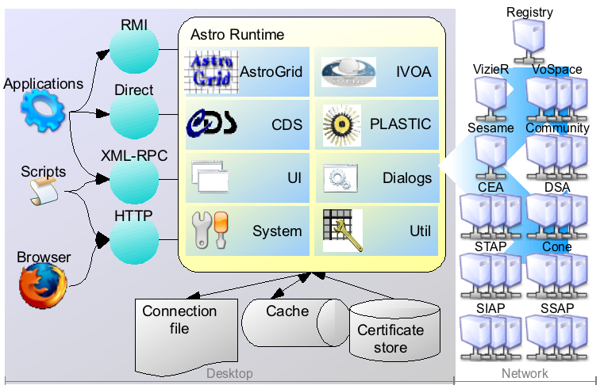

The Astro Runtime is middleware that makes it simple to use Virtual Observatory services.
This document describes the Astro Runtime, and how to use it's API.
Introduction
The Virtual Observatory (VO) is a collection of interoperating data archives and software
tools which utilize the internet to form a scientific research environment in which astronomical
research programs can be conducted.
However, the tangle of standards, technologies & implementations that underpin the VO
are a barrier to effectively performing research in this environment. The Astro Runtime (AR)
is a middleware layer that hides the complexity of the VO system. Using the AR, anybody with a little programming
experience (from scientist to developer) can access the VO immediately.
Features
The Astro Runtime provides high-performance clients for most kinds of VO service, and
assembles these into an API that is simple, consistent and
self-contained. This API hides the complexity of the VO infrastructure, lessens the learning curve, and isolates
the programmer from changes to standards and variance in service implementation.
The Astro Runtime is implemented in Java, and so can be executed on any platform. Importantly,
the API can be accessed from almost any programming language, and is suitable for
both science scripting and application development. It has been used
to construct scientific workflows in Python, Perl & Taverna.
to provide VO functionality to existing packages such as PyRaf
& ParcelTongue
to provide a commandline interface to the VO (see sample commandline scripts included)
to implement web applications which use VO services
as infrastructure for new applications, such as VODesktop
to VO-enable existing desktop applications
Status
The current Astro Runtime implementation is a stable release that is
used in a number of projects. Any alterations to this public API will be
made in a backwards-compatible manner.
External Dependencies
Programs that call the API require the AstroRuntime to be running. The AstroRuntime is provided as part
of VODesktop. Therefore you must
have VODesktop running on your machine before calling any of the AR API functions.
{@stickyInfo
It is possible to start VODesktop in 'windowless' mode - where no user interface is displayed - by passing it the {@code -headless}
commandline option. This makes it suitable for deploying on a headless server, or for running in the background on the user's desktop if only the
AstroRuntime functionality is required.
}
Getting Started
It's quite straightforward to connect to the Astro Runtime and start
calling functions. This tutorial covers that first step.
Architecture
The architecture of a system that uses AR to access VO services looks
something like this:

The left
of the figure lists the different categories of client that might use the AR
(there's some overlap between the categories).
The AR (yellow box) runs as a separate process, typically on the user's desktop, and can
accept connections from many clients.
Clients connect to the AR using one of four possible access methods
(green circles).
Once connected, clients can call functions of the AR.
Related functions are gathered into components. Related
components are in turn gathered into modules. The modules available
in the AR are shown in the figure as blue boxes, and are summarized below:
Prompt the user for input using UI dialogs, and display VODesktop windows (e.g. file explorer)
{@link org.astrogrid.acr.util util}
Utilities for working with tables
{@link org.astrogrid.acr.system system}
Configuration and supporting components
{@link org.votech.plastic plastic}
Exchange data with other desktop applications using the PLASTIC protocol
Choosing an Access Method
The access method you should use to call the AR depends mostly on what programming language you're using:
Language
Access method
Python
XML-RPC
Perl
XML-RPC
Java
XML-RPC, RMI or Direct
C/C++
XML-RPC or C Binding
Other Languages
XML-RPC, C Binding, or HTTP
We'll now describe each access method in turn - feel free to skip the
appropriate section.
XML-RPC
XML-RPC is a remote procedure call protocol which uses XML to encode its calls and HTTP as a transport mechanism.
There are XML-RPC client libraries available for a range of languages. See
http://www.xmlrpc.com/
for a list.
The specifics of how to install the XML-RPC library and configure the XML-RPC client varies
between languages and libraries. However, all follow the same general pattern, which is described here.
When running, the AstroRuntime will write a file called {@code .astrogrid-desktop} in the user's home directory.
The file contains a single line, something like
{@source http://localhost:8001/a6d4c15eaaefe3c/ }
This is the address of the AR's internal webserver. The file is re-written (with different contents) each time the AR is
launched, and is deleted when the AR exits.
In your program, read the first line from the {@code .astrogrid-desktop} file, and append {@code xmlrpc}
to it. This gives the URL of the AR's XMLRPC server - something like
{@source http://localhost:8001/a6d4c15eaaefe3c/xmlrpc }
Pass this URL to your XML-RPC client library to configure it
Once your XML-RPC client is configured, functions of the AR API can be called using the form
{@code module-name.component-name.function-name}. The documentation for each
component states the module-name and component-name to use under (in the 'Service Name' subsection). Function names are case-sensitive.
When calling an AR function using XML-RPC, the parameter and return types will be simpler than what is documented. Most
parameters can be passed as plain strings. Results are either strings, or, where the result is an object, an XML-RPC structure.
The documentation contains many examples of calling functions via XML-RPC, and notes when something different will be returned.
{@stickyWarning
Make sure the AR is running before you execute your program, otherwise
the {@code .astrogrid-desktop} file won't exist, and your program will fail.}
The following sections describe how this general pattern applies to specific languages: python & perl.
Python
{@stickyInfo
There's a library called
AstroGrid Python
that wraps some of the most commonly-used AR functionality in a higher-level, more 'pythonic' style of library.
Python-using science scripters might wish to investigate this alternative.
}
Python out-of-the-box comes with an XML-RPC library, so no additional installation is required.
The following example shows how to read the {@code .astrogrid-desktop} file, append {@code xmlrpc}, and then
create an XML-RPC client (confusingly by calling the function {@code Server}). The result is an XML-RPC client, called {@code ar}
{@source
from xmlrpc import Server
from os.path import expanduser
ar = Server(file(expanduser('~/.astrogrid-desktop')).next().strip() +'xmlrpc')
}
Once connected, functions of the AR API can be called as normal python method calls, by appending
{@code module-name}, {@code component-name} and {@code function-name} to the {@code ar} object. For example, to call
{@link org.astrogrid.acr.cds.Sesame#resolve Sesame.resolve()} do this:
{@source
pos = ar.cds.sesame.resolve('m32')
}
{@code Sesame.resolve()} is documented to return a object of type {@link org.astrogrid.acr.cds.SesamePositionBean}. However, as this function
has been called over XML-RPC, an XML-RPC struct is returned instead, which appears as a Python {@code dict}. This {@code dict} contains
a key-value entry for each field of the {@code SesamePositionBean}. These can be accessed as follows:
{@source
#project some items from the dictionary
print pos['ra'],pos['dec']
#list all keys in the dictionary
print pos.keys()
}
Perl
There's a selection of XML-RPC libraries available for Perl. This example uses
RPC::XML::Client
which needs to be installed separately.
Once the library has been installed, connecting to AR follows the usual pattern (as shown in the example below): read the {@code .astrogrid-desktop}
file, append {@code xmlrpc} and then use the resulting URL to create a new XML-RPC client (called {@code ar}).
{@source
use File::Spec;
use RPC::XML::Client;
open(F, File::Spec->catfile( "$ENV{HOME}", ".astrogrid-desktop" ));
my $prefix = ;
close( F );
chomp( $prefix );
my $ar = RPC::XML::Client->new($prefix . "xmlrpc");
}
Once connected, functions of the AR API can be called by using the {@code $ar->simple_request()} method.
The first parameter is the full name of the AR function, in the form {@code module-name.component-name.function-name}.
Further parameters are the parameters to pass to the AR function. For example, to call
{@link org.astrogrid.acr.cds.Sesame#resolve Sesame.resolve()} do this:
{@source
my $pos = $ar->simple_request('cds.sesame.resolve','m32');
}
{@code Sesame.resolve()} is documented to return a object of type {@link org.astrogrid.acr.cds.SesamePositionBean}. However, as this function
has been called over XML-RPC, an XML-RPC struct is returned instead, which appears as a Perl {@code hash}. This {@code hash} contains
a key-value entry for each field of the {@code SesamePositionBean}. These can be accessed as follows:
{@source
print "$pos->{ra}, $pos->{dec}\n";
}
RMI
RMI is a Java-specific technology, that can be used to connect to AstroRuntime from a Java program, or
any other JVM-based
programming language (e.g. Jython, JRuby, Groovy).
The library jars in the {@code rmi-lib}
directory must be added to your application's classpath. These are:
acr-interface-*.jar: the AstroRuntime API definition
With the libraries in place, a program can connect to AstroRuntime as follows:
{@source
import org.astrogrid.acr.builtin.ACR;
import org.astrogrid.acr.Finder;
Finder f = new Finder();
ACR ar = f.find();
}
{@link org.astrogrid.acr.Finder} takes care of connecting to the AstroRuntime. If it can't find a running
service, it'll attempt to create one - either in-process (if the AstroRuntime
implementation libraries are on the classpath) or externally (by prompting the user).
{@code Finder} returns an instance of {@link org.astrogrid.acr.builtin.ACR} (which really should be called {@code AR}).
From this class you
can retrieve components of the AstroRuntime, which can then be treated as conventional objects, and
their methods called as needed.
{@stickyNote
Components can be retrieved from {@code ACR} either by giving their interface class, or by giving the component name in the form
{@code modulename.componentname}. The first alternative is more strongly typed, while the second method is
more convenient when programming in alternative JVM languages such as Jython.
}
The following example retrieves the {@link org.astrogrid.acr.cds.Sesame} component by it's interface class,
and then uses this component to resolve an object name to a position.
{@source
import org.astrogrid.acr.cds.Sesame;
import org.astrogrid.acr.cds.SesamePositionBean;
//retrieve a component from AR
Sesame sesame = (Sesame)ar.getService(Sesame.class);
// use that component
SesamePositionBean pos = sesame.resolve("m32");
System.out.println(pos.getRa() + ", " + pos.getDec());
}
Direct
If the client program runs in the same JVM as the AstroRuntime, the programming model is the
same as for the RMI case. Again {@code Finder} is used, but it will return a direct reference to the runtime,
rather than a RMI proxy. This difference is not observable from the client program.
A client program that connects to the AstroRuntime in direct mode may access
additional APIs, and implement various extension points for AstroRuntime and VODesktop.
This is covered in separate documentation (in progress).
HTTP
If the programming language that you wish to use lacks an XMLRPC library, but has a way to
GET or POST to a URL, the HTTP access method can be used as a fallback.
As described in the XML-RPC section of this document, on startup the AstroRuntime writes a
file {@code ~/.astrogrid-desktop} (and deletes this file when it halts).
The file contains a URL, something like
{@source http://localhost:8001/a6d4c15eaaefe3c/ }
This is the Base URL of the internal web-server of the AstroRuntime, which serves a series of web pages and forms that can be
explored in a web browser, or called programatically. These webpages provide a web-form for every function of the AstroRuntime API.
The pages are arranged into a hierarchy of module / component
/ function / result-type . Modules, components and
functions were introduced previously. The result-type is a choice between
html - to return an html-formatted result
plain - to return a plain-text result
The web-form pages have a section at the bottom called Invocation URL which
describes the full URL required to call this function. For example, the web-form for {@link org.astrogrid.acr.ivoa.Cone#constructQuery Cone.constructQuery()}
displays:
{@markupSource
base-url/ivoa/cone/constructQuery/[ html|plain ]?service=val&ra=val&dec=val&sr=val
}
Substituting {@code base-url} by the URL read from {@code ~/.astrogrid-desktop}, selecting either {@code html} or {@code plain},
and then filling in the parameter values ({@code val}) gives a URL which can then be GET to call this AstroRuntime function.
{@stickyNote
It is also possible to perform a POST of the
parameters - this is better suited when the parameters are large or need escaping.
}
The following example illustrates how to work with AR using only the Unix shell ({@code sh}) and curl (a standard utility
for retrieving URLs). The script first reads the base URL from the {@code ~/.astrogrid-desktop} file. The {@code Cone.constructQuery()}
function is then called using curl. Each parameter is provided by a separate {@code -d} flag, while
the {@code -s} flag suppresses output to the console.
The result of a call to {@code constructQuery()} is a query URL that can be used to perform a cone search on the specified service.
The final line uses {@code curl} to execute the query URL (there is an AstroRuntime function that will do this, but {@code curl} does just as
well here).
{@source
#find how to connect to AR
BASEURL=`cat ~/.astrogrid-desktop`
#Perform Cone search on
QUERY=`curl -s -d "service=ivo://nasa.heasarc/rc3" \
-d "ra=25.429167" \
-d "dec=-89.334444" \
-d "sr=1.0" \
${BASEURL}ivoa/cone/constructQuery/plain `
curl -s $QUERY
}
The Next Step
Explore the functionality of the different parts of
the AstroRuntime API, and begin to understand
how they interrelate and what can be done with each of them. There's plenty of examples in the documentation,
plus links to the underlying specifications and standards.
If you use the AstroRuntime in your research or project, or are considering doing so,
we'd love to hear from you. Furthermore, if you've questions on how to
use particular parts of the API, we'll do our best to help. There is also a mailing list
Astro Runtime Users (subscribe).